机器学习研究者所说的 Support Vector Machines 通常泛指最大边界分类器 (Maximal Margin Classifier)、支持向量分类器 (Support Vector Classifiers) 和支持向量机 (Support Vector Machine) 三者。其本质都是构造linear decision boundary，前者分别是后者在数据纬度和适用范围方面的延伸。
Hyperspace
说到SVM，无法绕过的一个概念就是超平面 (Hyperspace)。其实很好理解，我们熟悉的三维立体空间其hyperspace就是一个平面，二维空间的hyperspace就是一条线。类似地，我们把 \(p\) 维空间的flat affine subspace（也就是 \(p-1\) 维子空间）的一个“平面” 定义为超平面 (hyperplane)，
\[ \begin{equation} f(X) = \beta_{0}+\beta_{1} X_{1}+\beta_{2} X_{2}+\ldots+\beta_{p} X_{p}=0 \end{equation} \]
Hyperspace把 \(p\) 维空间切成两半，任意一个满足以上公式的点 \(X = (X_1,X2,...,X_p)^T\) 都落在此hyperspace上。而不满足公式(1)的点，也就是 \(f(X) > 0\) 和 \(f(X) < 0\) 的情况，分别落在hyperspace的两侧。
假设现有一个由 \(p\) 个特征和 \(n\) 个训练样本组成的数据集，也就是一个 \(n \times p\) data matrix \(\textbf{X}\)，和对应的 label \(\textbf{y} \in \{-1,1\}\)。想象有一个hyperspace 可以把 \(p\) 维training data按照对应的label完美地切分开。为了方便理解和可视化，这里仍以二维空间为例。左图显示了3个符合标准的separating hyperspace（黑线）；右图可以理解为一个separating hyperspace 分类器，任何落在hyperspace两边的test data都被划分到相应的类别。
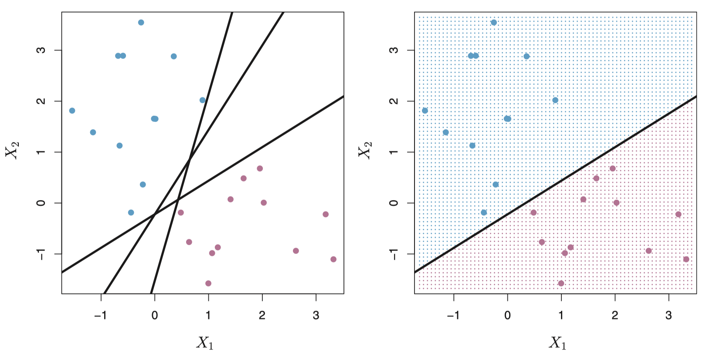
Maximal Margin Classifier
一般来讲，如果存在 hyperspace 能完美划分training data的话，同样符合条件的hyperspace应有无数个（类似上图左中的黑线可以画无数条）。Optimal Separating Hyperspace 定义了一个分类方法，从无数个hyperspace中找到最优的那一个 (a.k.a. 最大边界分类器 Maximal Margin Classifier) 。如下图，我们把training observation与separating hyperspace之间的最小垂直距离称作 Margin。顾名思义，maximal margin classifier就是无数 (if exists) 可以完美切割training data 的hyperspace 中margin最大的那一个。
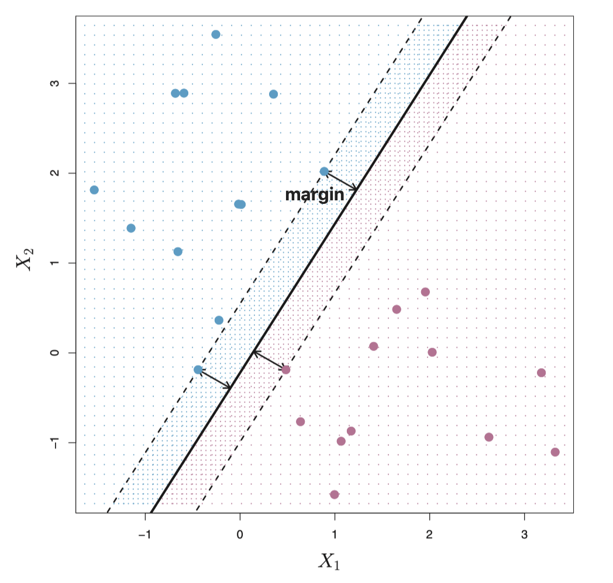
原理非常好理解，一般认为离separating hyperspace比较远的数据点的置信度比较高，而靠近hyperspace 的点我们则不太确定。因此我们希望这个最近距离，也就是margin，越大越好。下图是经典的Iris例子，很明显，直觉上来讲右边也比左边更合理。相对较宽的margin可以简单理解为「模型的整体置信度」较高。
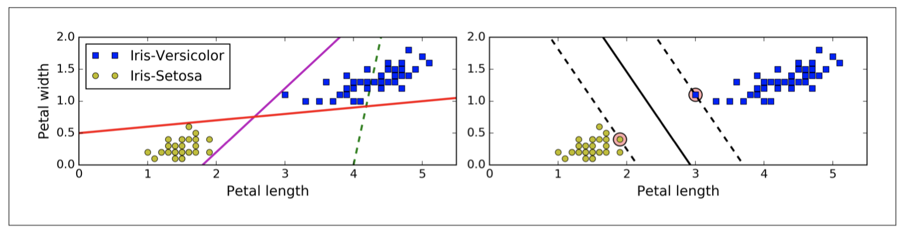
注意fig. 2 和 fig. 3(右) 中恰好落在margin边缘（虚线）的点，也就是离hyperspace（实线）最近的几个点，它们被称作 support vectors。叫vector 是因为它们都是 \(p\) 维向量，而support 在于它们“支持”了maximal margin hyperspace的确立（假设这些点移动了，那么hyperspace也会移动），这个名字可以说很形象了。由此也可以发现SVMs 一个有趣且十分重要的特性：separating hyperspace 的确立由这几个support vectors 直接决定，与其他data points并无多大关系（其他点随便移动，只要不碰到margin）。
Maximal Margin Classifier 是一个很直观很自然的分类方法，然而事实是这样的optimal separating hyperspace在实际应用中很少存在：大多数情况下，样本空间压根儿无法被任何hyperspace完美分割。还是二维的例子，如图4，不存在一个hyperspace（一维直线）可以完美分割两类。
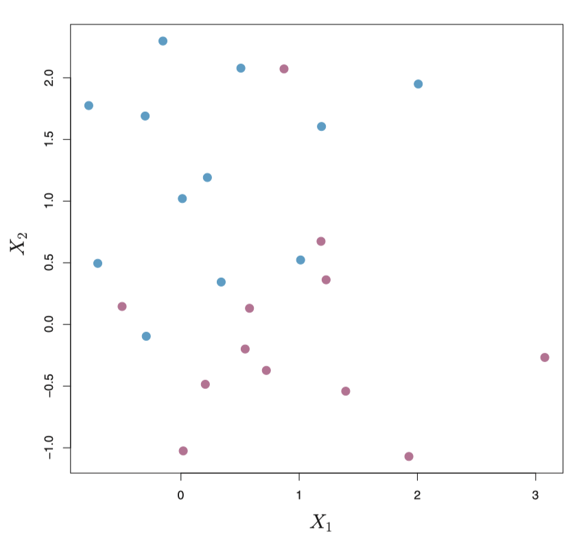
Support Vector Classifier
像先前讨论的那样，大多数时候Maximal Margin Classifier并不存在；有时即使“勉强”存在，也非理想方案。举两个例子，fig. 5 中，左边是一个Maximal Margin Classifier，右边是仅增加了一个蓝色样本之后对separating hyperspace的影响；fig. 6中，左边是根本不存在Maximal Margin Classifier的情况，右边是存在但非理想方案。
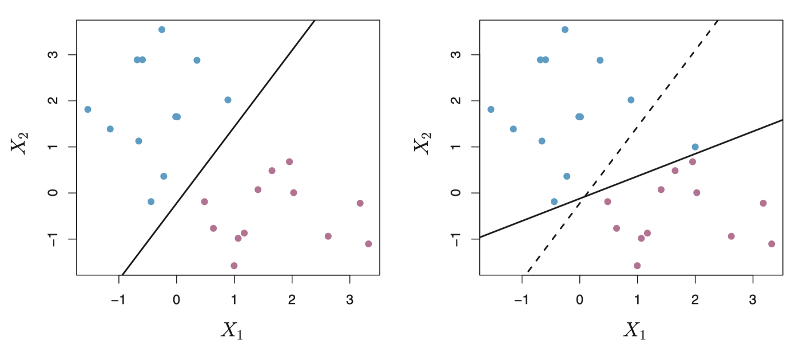 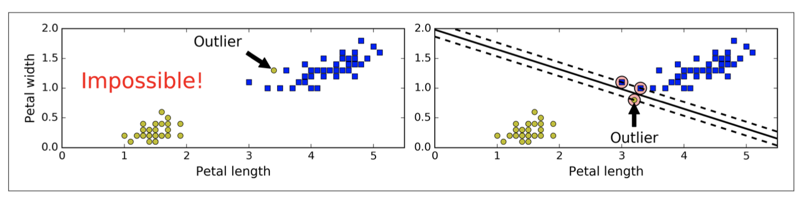
根据以上两个例子，可以看出Maximal Margin Classifier对单个样本（尤其是outliers）是极其敏感的。右边的两个Maximal Margin Classifiers都不是很有说服力。原因有二，其一是它的margin太窄了。前面说过margin的宽度可以看作是我们对整体正确分类的一个置信度。另一个原因是，对outliers敏感度高的模型非常容易造成overfitting。这种情况下，有必要考虑另一种基于hyperspace的方法，它并不能完美的分割training data，但是它
- 对单个样本有更高的鲁棒性
- 能够很好地分类绝大多数样本
这意味着，为了能让大多数样本能被正确的分类，即使错分几个样本也是值得的。
Support Vector Classifier， 有些书里也被叫做 Soft Margin Classifier，就是这样的分类器。SVC的margin 被叫做soft margin，是因为它可以被violated（fig. 7 left），甚至separating hyperspace 都能被“跨越”（fig. 7 right）。
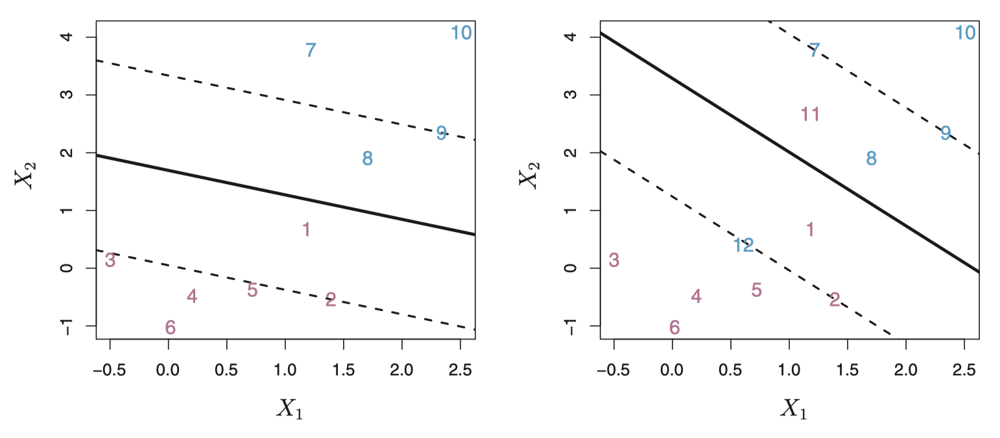
\[ \begin{equation} \underset{\beta_{0}, \beta_{1}, \ldots, \beta_{p}, \epsilon_{1}, \ldots, \epsilon_{n}, M}{\operatorname{maximize}} M, \text{subject to} \left\{ \begin{array}{ll} y_{i}\left(\beta_{0}+\beta_{1} x_{i 1}+\beta_{2} x_{i 2}+\ldots+\beta_{p} x_{i p}\right) \geq M\left(1-\epsilon_{i}\right) \\ \epsilon_{i} \geq 0, \sum_{i=1}^{n} \epsilon_{i} \leq C\\ \end{array} \right. \end{equation} \]
其中\(M\)是margin 的宽度；\(\epsilon_n\) 是第 \(i\) 个样本到hyperspace的相对距离，
- 如果 \(\epsilon_i = 0\) 则样本\(X_i\) 在 margin 的正确一侧（fig 7 右中的5、10号样本），
- 如果 \(\epsilon_i > 0\) 则样本\(X_i\) 在 margin 的错误一侧（fig 7 右中的1、8号样本），也就是\(X_i\) violated the margin，
- 如果 \(\epsilon_i > 1\) 则样本\(X_i\) 在 hyperspace 的错误一侧（fig 7 右中的11、12号样本），也就是样本被错分。
总的来说，SVC 的优化原则就是让margin 尽可能大，让margin violations 尽可能少。这二者之间的平衡，用公式(2) 中的非负参数C 来控制。C 限定了 \(\epsilon_i\) 的和，也就是决定了模型对margin violations在数量和程度上的 tolerance，是训练模型时最重要的tuning parameter。一般来讲，
- C越小，margin 越宽，violations越多；
- C越大，margin 越窄，violations越少。
⚠️ 此处有争议：本文参考的3本书持不同观点并且都有图有例，此处按朴素贝叶斯准则（- -）主观决定选ESL和Hands on ML的的方案。ISL的例子和参数给的都很模糊，- - 有可能是noise instance。fig. 8即Hands on ML图例，ESL和ISL的图例见文末。
训练模型时，一般用 cross-validation 来调参数C，此处特指k-fold CV。而Leave-one-out CV error 会被支持向量在training data 中的占比所限定，因为leaving out 「非支持向量」对模型评估没有影响，故此方法不太适用SVM模型。
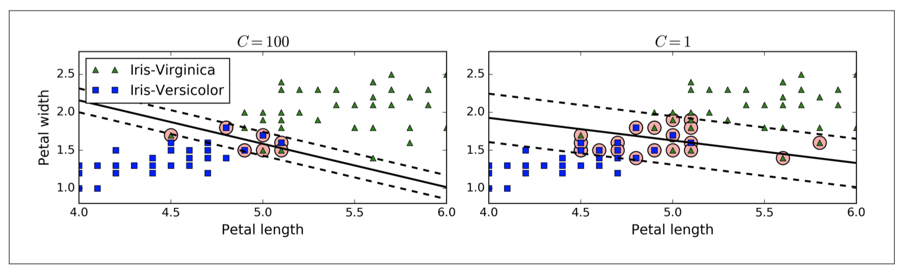
根据公式(2) 可以总结出一个类似 Maximal Margin Classifier的特点：SVC的hyperspace 是由training data的很小一部分子集（support vectors）决定的。Support vectors的定义与Maximal Margin Classifier 略有不同：对于SVC，所有落在margin 内包括margin 边界上的点都是support vectors。Fig. 8 中被圆圈标记的数据点即是该模型的 support vectors。SVM系列的模型在这一点上和同为线性模型的LDA (Linear Discriminant Analysis) 不同，LDA的 decision boundary 由 \(y\) 类别的协方差 (covariance) 和质心 (centroids) 位置共同决定。
Support Vector Machine
至此我们讨论的都是feature space 线性可分的情况，而实践中的数据往往并非线性可分。如fig. 9 左图所示是一个非常简单的一维feature space线性不可分的例子，显然前面说到的SVC或者任何一种linear classifier，在这种情况下都不适用。
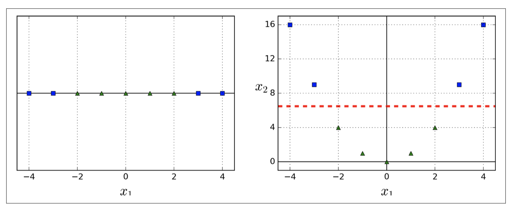
一种解决方案是扩展feature space的维度，如增加polynomial features。Fig. 9 右图是扩展 \(x_1\) 到二维后的情况，也就是新增了一个quadratic feature \(x_2 = (x_1)^2\) ，可以看到新的data space变得线性可分了，图中红色虚线可以完美地把蓝色和绿色两类区分开来。这就是支持向量机的基本原理。
支持向量机 (Support Vector Machines) 是SVC的一种延伸，其建立non-linear boundaries 的本质是通过核函数 (kernels) 在扩展后的高维特征空间构造 linear boundary。Kernel 是描述两个样本相似度的函数 \(K(x_i, x_{i'})\) ，如公式(3) 是 linear kernel，也就是SVC的核函数：
\[ \begin{equation} K(x_i, x_{i'}) = \sum_{i=1}^p x_{ij}x_{i'j} \end{equation} \]
而fig. 9 中使用的poly kernel 可以归纳为：
\[ \begin{equation} K(x_i, x_{i'}) = (1 + \sum_{i=1}^p x_{ij}x_{i'j})^d \end{equation} \]
其中 \(d\) 代表 polynomial 的 degree。固然我们也可以利用 sklearn.preprocessing 里的函数手动添加 polynomial features，但SVM的 poly 核函数要相对高效的多，而且不会在original features较多的情况下升维导致 combinatorial explosion。从 Fig. 10 可以看出，degree 越大模型越容易overfit。
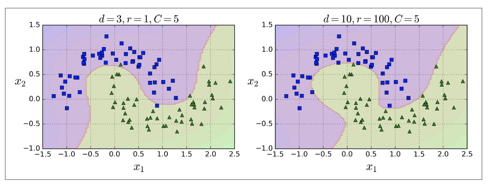
除了poly，另一个常用的核函数是 rbf ，也就是 the radial kernel, a.k.a. Gaussian RBF kernel： \[
\begin{equation}
K(x_i, x_{i'}) = \exp( -\gamma \sum_{i=1}^p (x_{ij} - x_{i'j})^2 )
\end{equation}
\]
Fig. 11 展示了4个使用rbf kernel 的模型，可以看出在 \(C\) 相同的情况下 \(\gamma\) 越大模型越容易overfit。
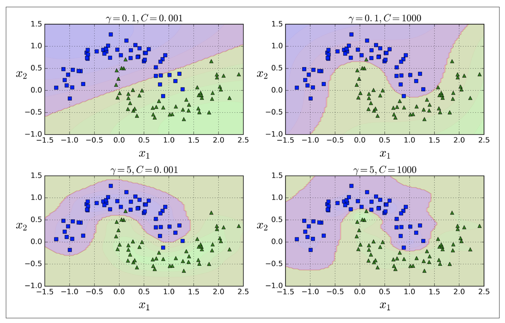
SVM for Multi-classification
基于 hyperplane 分割 feature space的原理，SVM 原生只支持二分类 (binary classification)，但我们可以在用法上进一步延伸，使 SVM 能够应用于 \(K\)-class cases。比较常见的两个方法是 OvO (one-versus-one) 和 OvA (one-versus-all)。
假设有 \(K>2\) classes，OvO 的思想是基于每个 class pair 建立SVM模型，那么实现这个\(K\)-class 分类一共需要建立 \(C_2^K\) 个 二分类SVM模型；OvA 的思想是基于每个 class与其他classes 建立SVM模型，一共需要 \(K\) 个。举个栗子，假设 \(K=3\)，\(y \in {A,B,C}\) 。ovo方法需要综合 \(M_{AB}\)，\(M_{AC}\)，\(M_{BC}\) 三个模型，ova方法需要综合 \(M_A\)，\(M_B\)，\(M_C\) 三个模型。
总的来说，SVM可应用于线性、非线性分类，回归，甚至异常点检测（Outlier detection），尤其适合复杂中小型数据集的分类问题。
Reference
[1] Géron, A., 2017. Hands-on machine learning with Scikit-Learn and TensorFlow: concepts, tools, and techniques to build intelligent systems. O'Reilly Media, Inc..
[2] James, G., Witten, D., Hastie, T. and Tibshirani, R., 2013. An introduction to statistical learning (Vol. 112, p. 18). New York: Springer.
[3] Friedman, J., Hastie, T. and Tibshirani, R., 2001. The elements of statistical learning (Vol. 1, No. 10). New York: Springer series in Statistics.
Appendix
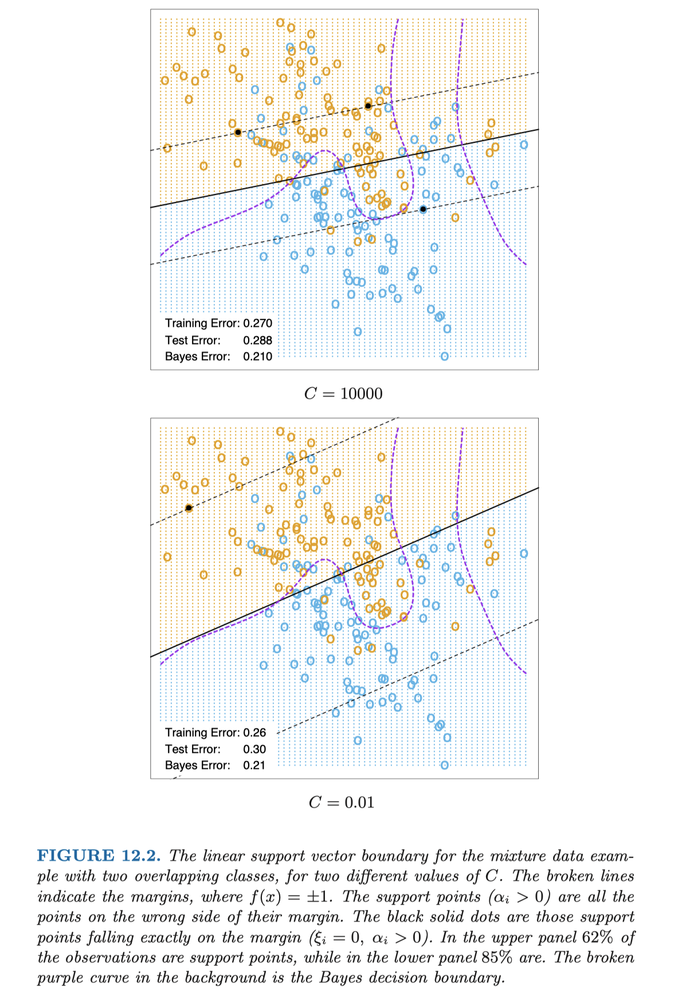 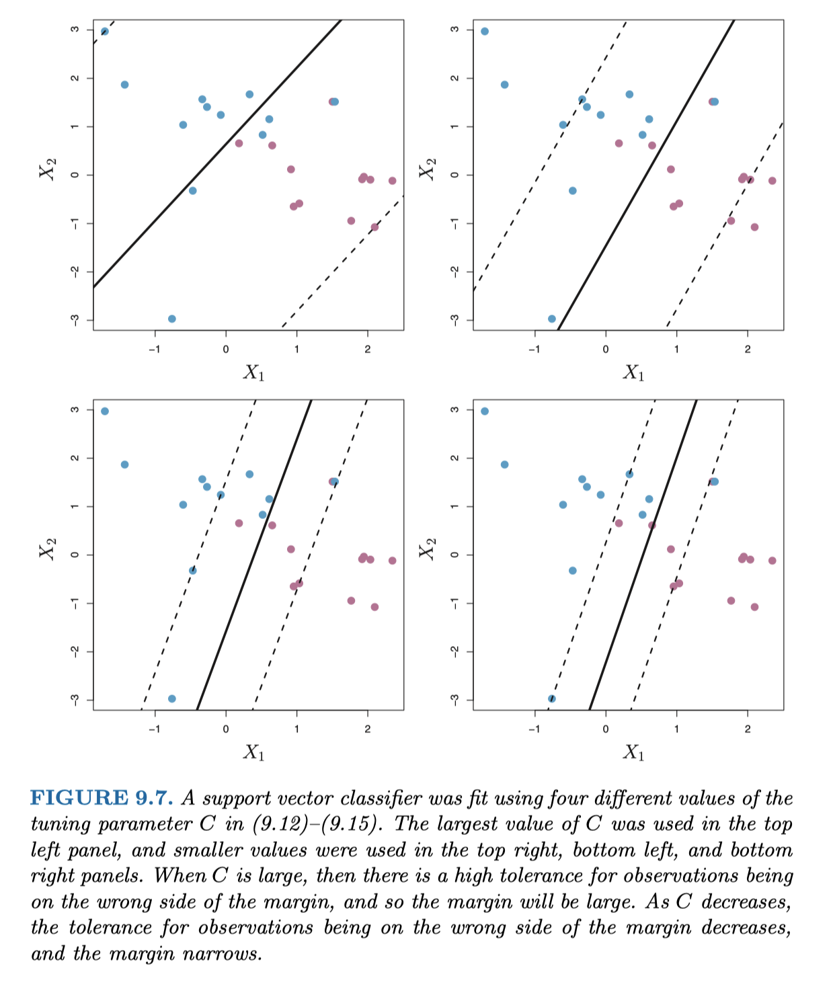
最后聊聊以上用到的3本参考书。
新手以实用为主的话推荐 Hands on Machine Learning with Scikit-Learn and TensorFlow。算法原理方面解释得比较浅，优点是行文较为通俗且配有大量的例图，重点是几乎没什么公式，数学不好的人读起来也不会压力太大。照着书内的代码敲一敲找找感觉，遇到瓶颈参考官方notebook（不建议上来就run现成的notebook），很快就能上手了。总的来说，这本更像是一本工具书，用来偶尔查阅。
后面两本来头就大了。鼎鼎大名ISL和ESL，各大院校数据挖掘与机器学习课程的黄金宝典，更偏教科书而不是工具书。
我见到Twitter上有人上来就给想自学转行机器学习的人或者推荐ESL，简直就是魔鬼啊。不要被element这个单词骗了， - -它真的一点都不elementary！推荐给新手 \(\approx\) 强行劝退。
不适合的人群：转行+自学，数学功底薄弱+看见希腊字母就想睡觉的人。
适合的人群：科班在读的同学和已入行的从业者/研究人员。前者有充足的预备知识，对整个机器学习领域的框架有基本认识，啃透这两本书等于打下更扎实的算法基础，毕业面试算法工程师绝对游刃有余（说不定能碾压面试官）；后者已对常见算法有一定的应用经验，调包调参已是家常便饭，用这两本书来进阶，在算法原理层面寻求更深刻的理解（作面试官时不要被优秀的毕业生碾压才好），才能在更多实用场景下举一反三。
ISL相比ESL就友好的多，但是需要一些R的基础（一下子劝退一拨人）。它的深度和难度介于Hands on Machine Learning和ESL之间，同时cover了算法理论和代码实现两个层面，是这3本书里我看得比较多的一本。个人觉得非常适合理工科尤其是统计专业的同学。诚然，在SVC小结发现了一个与其他两杯书相悖的论点，而且给的图例参数不详、不够典型，我仍然觉得这本书值得一看。即使是公认的好书，大家也可以用思辨性的眼光去读，多发问，多求证。
（个人意见，仅供参考）
评论